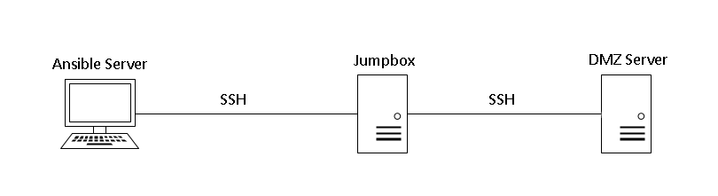

Ansible Bastion / Jumpbox Configuration
Often we’ll want to use Ansible to manage many servers, but some of those servers may not sit on the same area of the network. They might be in a Dematerialized Zone (DMZ) and only be accessible via a Bastion / Jumpbox server.
We can configure the Ansible Server to recognise Jumpbox configuration, so that it runs Ansible Playbooks on the DMZ Server, as though it were directly available;

Configuration
- Firstly, make sure SSH keys are set up correctly. The Ansible Server needs to reach the Jumpbox, and the Jumpbox needs to reach the DMZ Server.
You can use two seperate users for these two SSH connections, if preferred, although generally I would recommend having a specific user created for Ansible purposes. - Within your main Ansible directory on the Ansible Server (the same location as your .yml Playbook and ansible.cfg files), create a file called ssh_to_dmz.cfg
Within that file, enter the following configuration;
# Host to Jumpbox relationships
Host dmz_server_1 dmz_server_2
ProxyCommand ssh -W %h:%p jumpbox_server_1
Host dmz_server_3 dmz_server_4
ProxyCommand ssh -W %h:%p jumpbox_server_2
# Universal settings
Host *
User ansible_user
ControlMaster auto
ControlPath ~/.ssh/ansible-%r@%h:%p
ControlPersist 30m
- In the first section, Host to Jumpbox relationships, Host determines a list of DMZ servers that you wish to reach, and the end of the ProxyCommand line determines the Jumpbox / Bastion to use to make the connection, for those servers.
As above, you can specify multiple jumpboxes, as many as you need. - In the next section, Universal settings for all hosts, amend User to be the same username as you want to make the connections via. The rest is default multiplexing configuration that you can leave as is. You can read more about multiplexing settings here and here.
- Now you want the standard Ansible config file ansible.cfg to point at ssh_to_dmz,cfg. You can achieve this with the following lines, just add to the end of the ansible.cfg file;
[ssh_connection]
ssh_args = -F ./ssh_to_dmz.cfg -o StrictHostKeyChecking=no
StrictHostKeyChecking=no is optional, it is used to bypass the message “the authenticity of host X can’t be established, are you sure you want to continue connecting?”
Obviously, given that we aren’t receiving an interactive shell back, we can’t input ‘yes’ to that question, so that option avoids the check. Not recommended, but worth knowing if you’re on an estate with an ever changing network with recycled IPs.
- Everything is ready to run. By inputting a DMZ host in to the Ansible inventory file, such as our examples above dmz_server_1, dmz_server_2, etc., Ansible will connect to them as though they were directly available.
# inventory file
[group1]
dmz_server_1
dmz_server_2
dmz_server_3
dmz_server_4